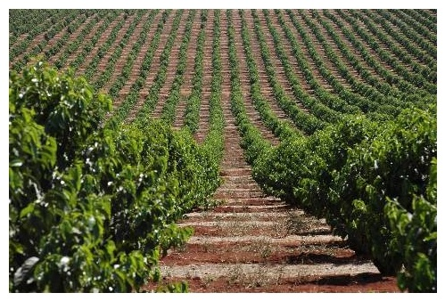
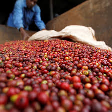

Some of the countries that grow coffee in Africa include:
Kenya
Uganda
Rwanda
Ethiopia and
Nigeria
Kenya
All Kenya coffee grown is Arabica coffee grown on the rich volcanic soil that is found in the highlands of the country. Today around 250,000 Kenyans are employed in the production of coffee. Most is produced by small land holders that are members of cooperatives that process their own coffee.

